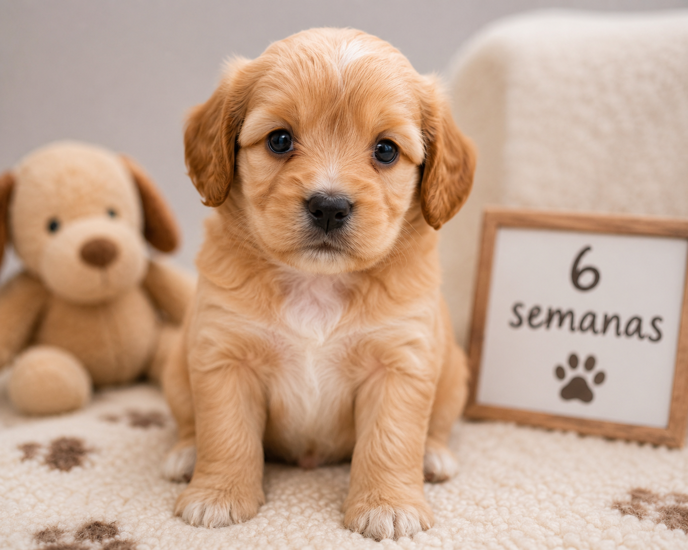
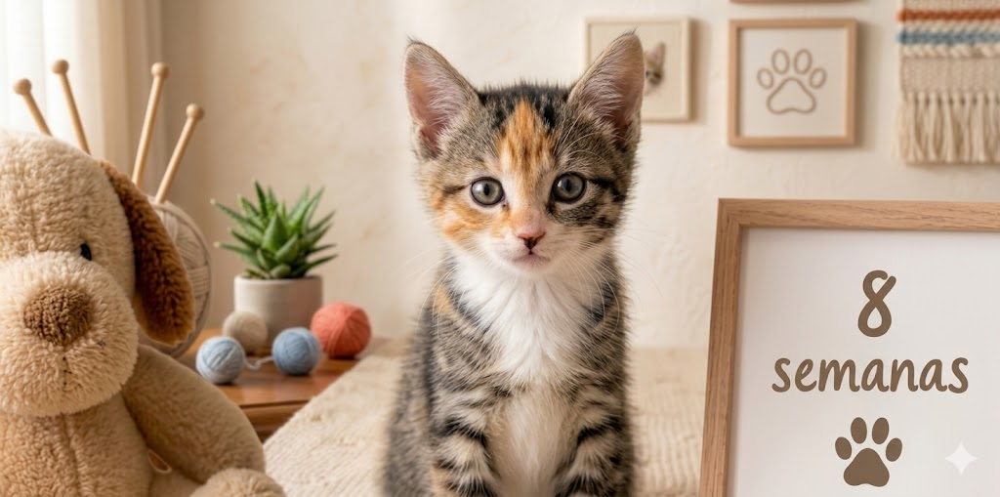
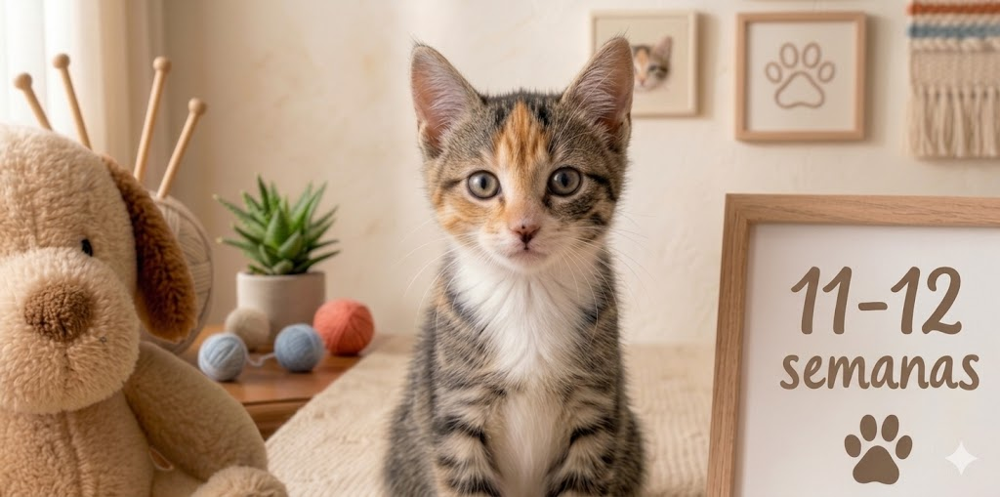
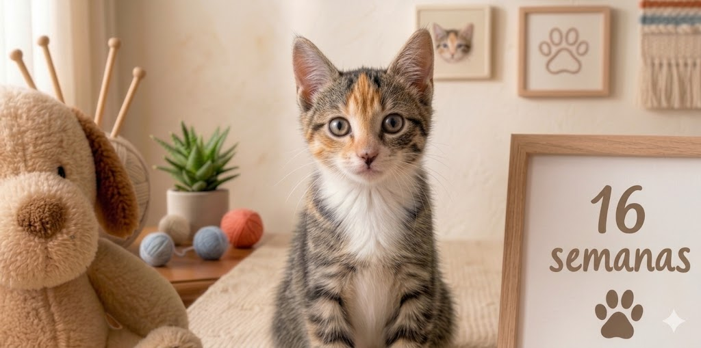
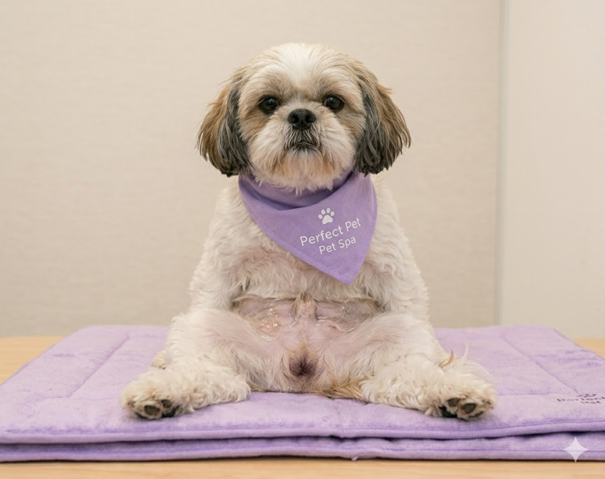
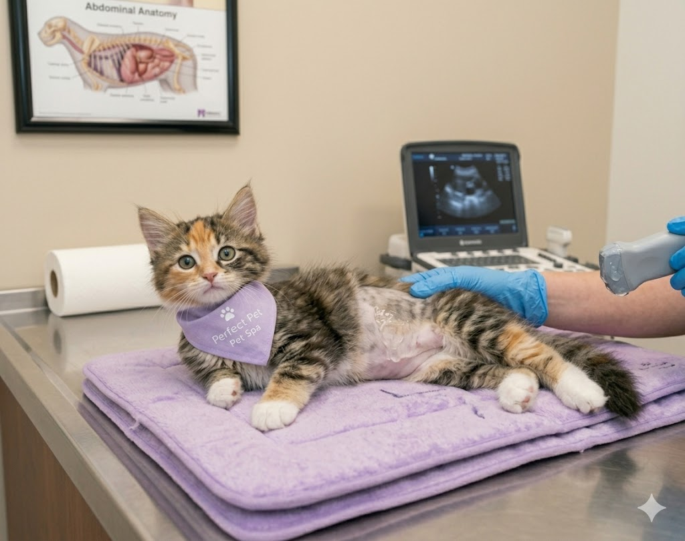

En Perfect Pet nos dedicamos a brindar una atención veterinaria integral para cuidar la salud y el bienestar de tu mascota. Explora nuestros servicios, que incluyen consultas generales, paquetes de vacunación y estudios de ultrasonido, siempre con atención profesional, compromiso y mucho amor por los animales.
Consulta general para revisión, diagnóstico y atención médica de tu mascota.
Consultas para reproducción de mascotas de pequeñas especies con control y seguimiento especializado.
Emisión de certificados y documentos oficiales para mascotas.
Protección completa para tu mejor amigo

Puppy
Moquillo / ParvovirusC4
Moquillo / Hepatitis / Parvovirus / ParainfluenzaC5
Moquillo / Hepatitis / Parvovirus / Parainfluenza / LeptospiraC6R
Incluye Rabia3 coproparasitoscópicos y desparasitación dependiendo de resultados.
Paquete completo
* Refuerzo anual no incluido en el paquete
* Costo independiente
Cuida a tu michi desde sus primeras semanas

Panleucopenia felina / Herpesvirus / Calicivirus

Aplicación de refuerzo para fortalecer la protección.

Panleucopenia / Herpesvirus / Calicivirus / Rabia
Prueba rápida de Sida Felino y Leucemia.
3 coproparasitoscópicos y desparasitación dependiendo de resultados.
Paquete completo
* Refuerzo anual no incluido
* Costo independiente
Cuidado profesional para perritos y gatitos 🐾


Nuestro equipo brinda atención delicada y segura para que tu mascota esté tranquila durante el procedimiento.